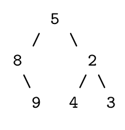
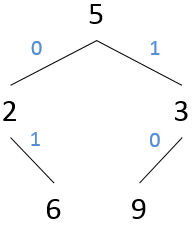

CSc 120: Prefix Codes
The primary purpose of this problem is to work with trees.
Restrictions
-
For the long problem, your code should follow the style guidelines
for the class. You must follow the updated guidelines for commenting classes.
-
You may not use concepts and/or short-hand syntax not yet covered in class. The restrictions include the following:
-
dictionary or list comprehensions, e.g., [n * 2 for i in range(10)]
-
with open (explicitly open and close the file instead)
-
the ternary operator (use an if instead)
-
nested functions (using def within a function to define another function)
-
exceptions (try/except)
-
type annotations
-
lambda expressions
-
generators and user defined iterators
-
default arguments
-
importing libraries (unless a library is explicitly mentioned in the specification))
Background
There are many ways to encode information. For example, the ASCII sequence is used to
encode character relationships. ASCII codes are also
fixed-length, hence the terms 7-bit ASCII and 8-bit ASCII. Uniform lengths
make turning a sequence of bits into the corresponding ASCII characters very
easy.
But what if you wanted variable length codes? Having variable length codes
would permit values that are very popular (say, the letters ‘e’ and ‘t’ in
English prose) to have shorter codes than less-popular values, thus saving
space. Without a uniform code length, we need a way to tell when the code
for one value stops and the next starts. One way to do this is to create a
prefix code. In a prefix code, the encoding of any value is never the first
part of the encoding of any other value. This means that if we read a
pattern and match it to a value, we know that we can stop trying to find a
match; there isn’t a longer potential match to worry about.
For example, say that the encoding for ‘e’ is 11, and the encoding for ‘t’
is 110. After reading the pattern 11, we don’t know if we should say that we
found an ‘e’, or keep going to see if we’ll find the code for ‘t’. In a
prefix code, this situation can’t happen. ‘t’ would have to be encoded with
a value whose prefix is something other than 11.
One way to create a prefix code is called Huffman Coding. It
generates binary encodings, which map nicely to binary trees if we allow the
left child references to represent 0 and the right to represent 1. You won’t
be writing the encoder for this assignment. Instead, we’ll give you a
non-hierarchical representation of the tree and an encoded sequence of
values. Your job will be to reconstruct the tree from the given
representation, and use it to decode a given sequence of values.
Note: You may want to review the video for OCA-7, which covers Huffman Coding.
You can watch the video again by logging into D2L and navigating to the NoCredit-OCAs.
Expected Behavior
Write a Python program, in a file huffman.py, that
behaves as specified below.
-
Prompt the user for the name of an input file using
input('Input file: '). The format of this file is
specified under Input format (below).
-
Build the decoding tree. This can be done recursively from the preorder and
inorder traversals: see Algorithm below.
-
Once the tree has been constructed, the third line of the input file can
be decoded. The algorithm for doing this is given under
Algorithm below.
Input format
An input file is a text file containing three lines of text:
-
The first line is the preorder traversal of the decoding tree.
This is a list of integers, each separated from the next by one or
more spaces. Each integer will be unique; there will be no duplicates.
-
The second line is the inorder traversal of the same tree, formatted
in the same way as the preorder traversal.
-
The third line is the encoded sequence of values. The encoding will take
the form of a sequence of the characters ‘0’ and ‘1’. (That is, we’re
simulating a file of bits.)
Example:
9 0 6 3 2 8 4
6 0 2 3 8 9 4
0001011011100011
(We’re not showing the corresponding tree; that’s for you to figure out!)
Output format
Your program is to output two sequences of values. The first is the
postorder traversal of the tree you build from the first two lines of the
data file. The second is the decoded sequence of values.
For example, here’s output that corresponds to the sample data file shown
above:
6 2 8 3 0 4 9
62448468
The first line is the post-order traversal of the tree; the second line
is the decoded sequence.
Algorithm
1. Tree Construction
The decoding tree can be constructed recursively from the preorder and
inorder traversals. We know that the first value in a preorder traversal is
the tree’s root, and we can build a binary tree node to hold it. In the
inorder traversal, the values ahead of the root are in the root’s left
subtree, and those to the right are in the right subtree. Each of those
groups of values will be grouped together in the preorder traversal, too,
but likely not in the same order. Because each of those two groups came from
subtrees, the preorder traversal reveals the root of each subtree. Thus, we
can recursively continue the process on the content of the subtrees and
thereby reconstruct the original tree.
As an example, here are the preorder and inorder traversals of a binary tree
of integers:
Preorder: 5 8 9 2 4 3
Inorder: 8 9 5 4 2 3
The first value in the preorder sequence is 5. Ahead of 5 in the inorder
traversal are 8 and 9, and after it are 4, 2, and 3. Thus, 5’s left subtree
must contain 8 and 9, and the right must contain 4, 2, and 3. But in which
configurations? Back to the preorder traversal. 8 is ahead of 9 in the
preorder sequence, meaning that 8 is the root of that subtree. In the other
group, 2 is the root. We can call the method on itself twice, once for each
subgroup, to form those trees. When completed, the resulting tree is:

2. Decoding an encoded sequence of values
To decode the encoded sequence of values (the third line of the input file),
start at the root of the tree, and read the first character. If ‘0’, follow
the left child reference. Otherwise, follow the right. When you reach a leaf
node, output the node’s value.
Return to the tree’s root, and continue until the input is exhausted.
No recursion required! Note that the values of the internal nodes will never
be output.
NOTE: Output is generated only for leaf nodes. For example,
consider the following tree:

In this case, there are two leaf nodes, and the sequences that lead to them
are 01 and 10. Thus,
if the sequence being decoded is 00 or 11,
your program should not produce any output because these sequences do not
lead to a leaf node.
Programming Requirements
Your program should meet the following requirements:
-
The decoding tree must be constructed recursively. This code takes
as arguments two lists of integers: the preorder traversal and the inorder
traversal of the tree and returns the tree.
-
At each level of this recursive tree construction process, you have to
find the nodes in the preorder and inorder traversals for each of the left
and right subtrees of the node being processed.
-
When using the tree to decode a sequence, you may find that an iterative solution
is simpler. However, you are allowed to use either iteration or recursion for this step.
Other than this, you are free to design your tree class and the rest of your solutions
as you see fit.
We've had several assignments that use classes by now, and at this point you ought to know
what to do and how to do it. Have fun, and impress us!
Errors
The program does not require error checking.
Examples and testing
This page describes how to
create examples and test cases for this problem.